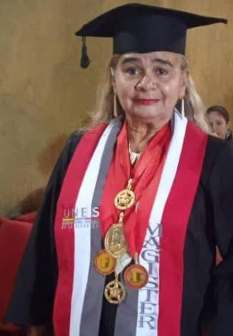

Somos un bufete venezolano que atiende de forma 100% online, para que resuelvas tus asuntos legales estés donde estés, con la seriedad de un abogado colegiado y la cercanía de quien te escucha.

Abogada venezolana al frente del bufete. Acompaña personalmente cada caso —poderes, apostillas, divorcios, sucesiones, empresas y asuntos laborales— con un trato directo, claro y confidencial. Su compromiso: que cada cliente entienda su situación y sepa exactamente qué se va a hacer, sin promesas vacías ni letra pequeña.
Nacimos de una necesidad real: miles de venezolanos —dentro y, sobre todo, fuera del país— necesitan resolver un trámite legal en Venezuela y no encuentran a quién confiarle su caso a distancia. Un poder que otorgar, una herencia que declarar, una apostilla urgente, un divorcio pendiente. Antes, eso significaba viajar, hacer filas o depender de terceros.
Por eso construimos un bufete pensado para el mundo de hoy: 100% en línea, con procesos claros y comunicación constante por WhatsApp. Solo se acude presencial cuando un registro o una notaría exige imprimir o entregar un documento, y en esos casos vamos nosotros por ti. La distancia dejó de ser una excusa para no resolver.
Te decimos el costo y los tiempos por escrito, antes de empezar. Sin sorpresas ni cobros ocultos.
No garantizamos resultados: ningún abogado puede hacerlo honestamente. Te damos una visión realista de tu caso, con sus riesgos y sus opciones. Te damos una visión realista de tu caso, con sus riesgos y sus opciones.
Tu información y tus documentos se manejan con reserva profesional absoluta.
Estés en Caracas, Madrid, Santiago o Bogotá, te atendemos igual: rápido y por tu canal.
Ejercemos con inscripción vigente ante el INPREABOGADO (número 187.536, visible en este sitio). Antes de contratar, puedes confirmar nuestras credenciales. La seriedad no se promete: se comprueba.